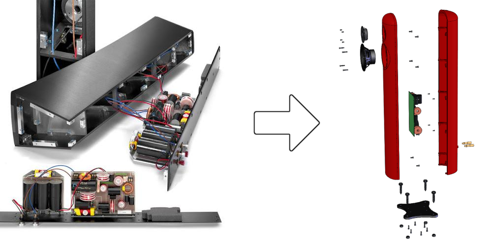

Cast Aluminum Loudspeaker
University of Colorado - Design for Manufacturability
January 2020 - May 2020
After interning at a loudspeaker factory during the summer of 2019, I took a class on design for manufacturing and assembly. I realized that many of the expensive CNC and tedious assembly processes being used by the loudspeaker company could be replaced by a simple casting process. You can see the two designs above: the old process with dozens of connectors and screws on the left and the new design with a short bill of materials on the right.
The challenge was to develop a solution that maintained both form and function with the new casting method. Through careful choice of geometry designed for casting and a few well-defined post-processing fixtures, I was able to propose a new process with the following improvements:
- The new design can be manufactured at half the cost of the old method
- Assembly time is 4x faster due to replacing over 150 fasteners
- The clean aesthetic is preserved with no visible cabinet screws